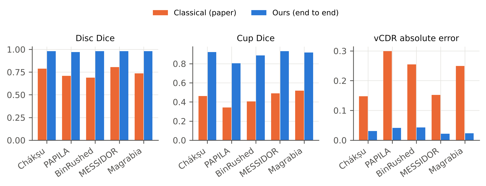
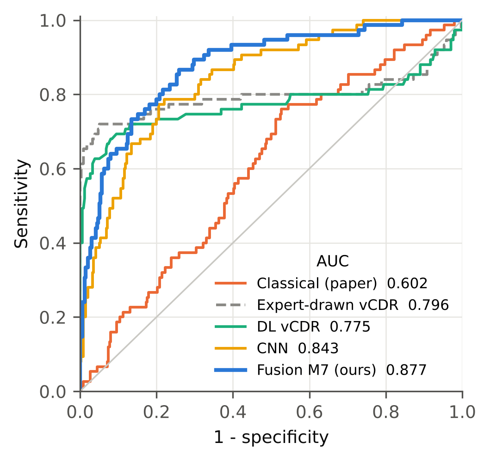
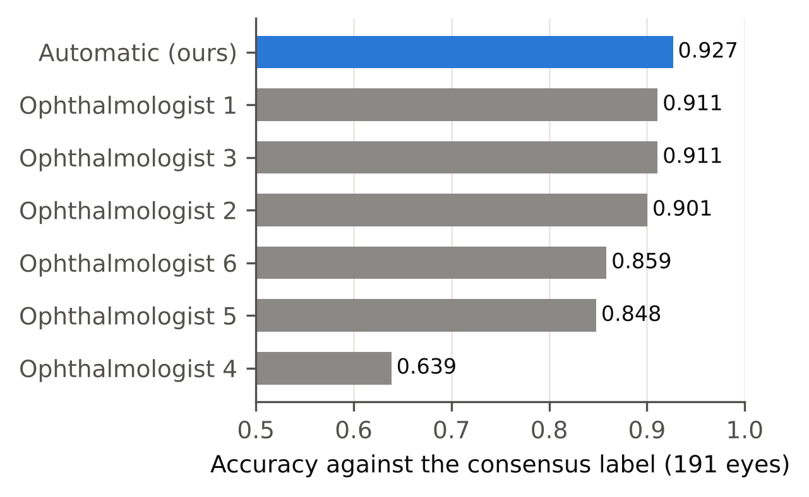
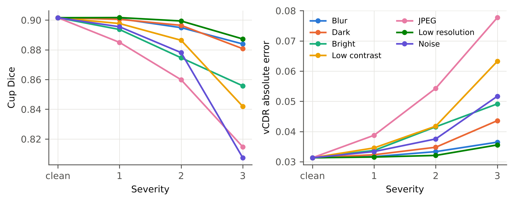

Try it
Pick a held-out test photo (never used for training) or drop your own fundus photograph. The first run downloads the models (about 190 MB, cached afterwards).
1. Find optic disc
2. Disc & cup
3. Rim & PPA
4. CNN + heat map
5. Decision & quality
Input photo
Result
Disc, cup and atrophy found
disccupPPA
Where the network looked
Red = regions that drove the glaucoma score.
Measurements
Neuroretinal rim (ISNT)
Healthy eyes usually follow Inferior ≥ Superior ≥ Nasal ≥ Temporal.
How it works
1. LocaliseU-Net (ResNet-34) marks the optic disc on the whole photo.
2. SegmentU-Net outlines disc and cup on a 3× crop; a U-Net++ refines the cup on a tight 1.5× crop.
3. MeasureVertical, horizontal and area cup-to-disc ratio; rim width in 360 directions (ISNT).
4. AtrophyPPA segmentation trained on PALM, plus a ring CNN that reads the band around the disc.
5. DecideResNet-50 on the disc region fused with CDR and rim by a calibrated logistic model.
6. CheckHeat map of the decision and an uncertainty-based image-quality warning.
Key results



